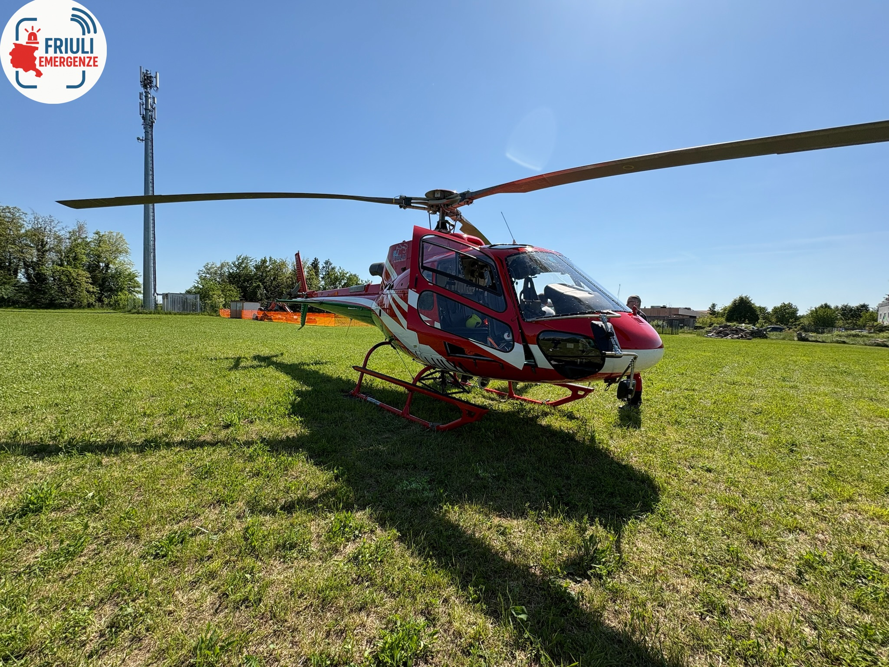
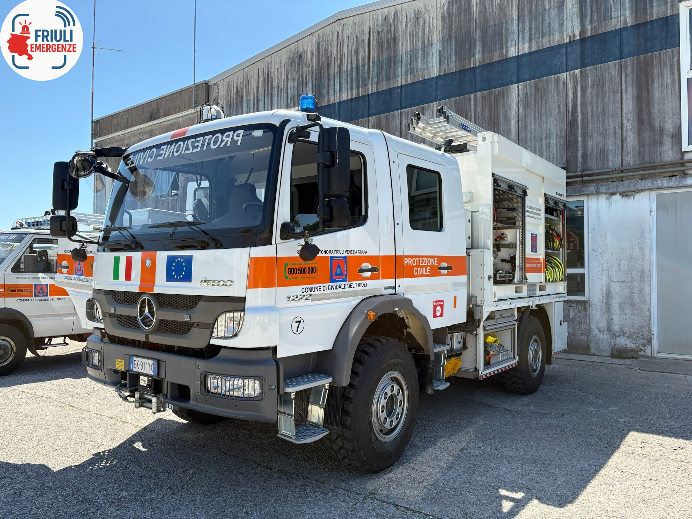
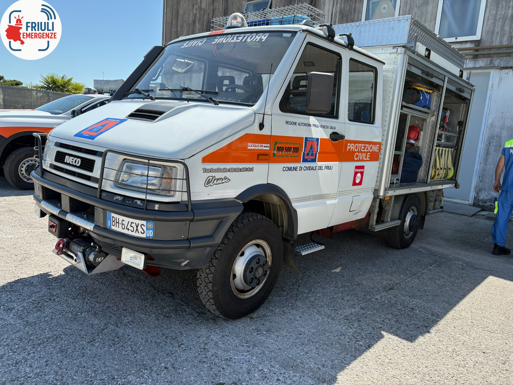

Friuli Emergenze
Documentiamo i mezzi di soccorso in azione sul territorio
Documentiamo i mezzi di soccorso in azione sul territorio
È online da oggi, 2 maggio, la possibilità di iscriversi alla newsletter ufficiale di Friuli Emergenze!
Essa consisterà nell'invio di email quando il sito sarà aggiornato e ogni primo del mese per annunciare le modifiche ai siti fatte in quel periodo di tempo.
Chi vuole può iscriversi alla newsletter cliccando qui!
Clicca sul testo per scoprire di più
Se vuoi collaborare anche tu all'espansione della galleria di questa pagina, iscriviti a MyFrEM oggi stesso e inizia a condividere le foto dei mezzi di soccorso della tua zona!

I-ULYA - Antincendio Boschivo FVG

Mercedes-Benz Atego 1222 - Protezione Civile Cividale del Friuli

Iveco TurboDaily 35-10 4x4 - Protezione Civile Cividale del Friuli